39.1.1. How to add 2D Cutting Operation
39.1.2.3. Environment heat transfer
39.1.4.3. Tool Material selection
39.1.4.4. Tool Mesh Generation
39.1.5.1. Workpiece Geometry Page
39.1.5.2. Workpiece Material Selection
2D Cutting operation can be setup in Integrated Manufacturing Process environment that can be accessed from GUI Main. Create a new problem by either selecting File  New Problem or by clicking
the
New Problem or by clicking
the  icon. Select “2D Cutting” radio button under problem type and unit system. Click on
icon. Select “2D Cutting” radio button under problem type and unit system. Click on  button as shown in Fig. 39.1.1.
Integrated Manufacturing Process wizard will open, we can see that 2D Cutting operation is added in Operation editor.
button as shown in Fig. 39.1.1.
Integrated Manufacturing Process wizard will open, we can see that 2D Cutting operation is added in Operation editor.
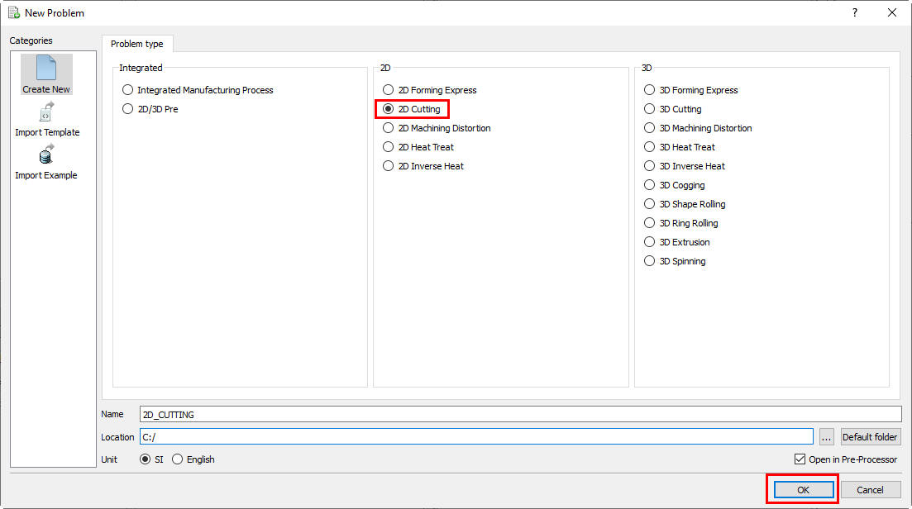
Adding 2D Cutting Operation from GUI Main
We can also add “2D Cutting” operation by clicking the  icon. Select Integrated Manufacturing Process and unit system. Integrated Manufacturing Process window will be opened
with “New Project” popup. In “New Project” popup, we can add “2D Cutting” operation by checking the check box of “First operation” and selecting “2D Cutting” as first operation from pull down list as shown in Fig. 39.1.2. Then click
icon. Select Integrated Manufacturing Process and unit system. Integrated Manufacturing Process window will be opened
with “New Project” popup. In “New Project” popup, we can add “2D Cutting” operation by checking the check box of “First operation” and selecting “2D Cutting” as first operation from pull down list as shown in Fig. 39.1.2. Then click  in New project window. Integrated Manufacturing Process wizard will open and in “Operation Editor”, we can observe “2D Cutting” operation added in Operation editor. Using copy
Existing project option, we can import previous saved projects as new project.
in New project window. Integrated Manufacturing Process wizard will open and in “Operation Editor”, we can observe “2D Cutting” operation added in Operation editor. Using copy
Existing project option, we can import previous saved projects as new project.
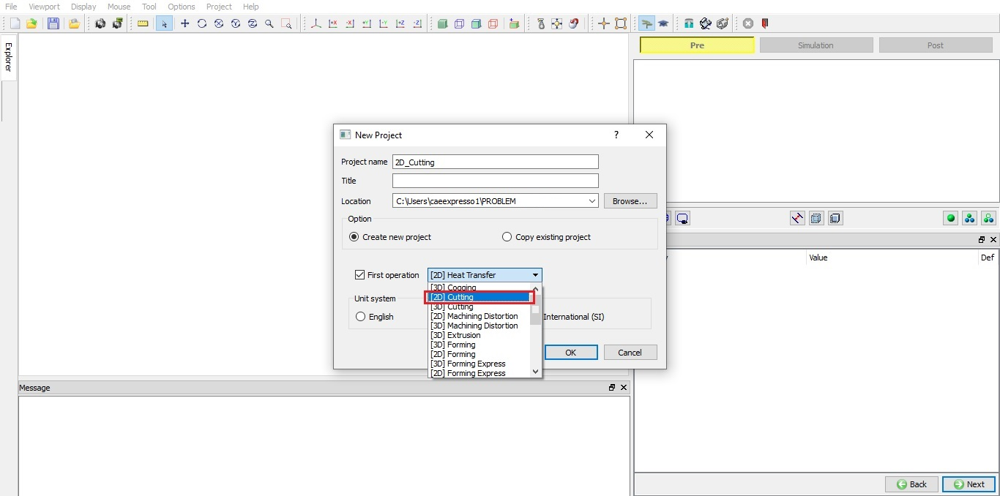
Assign Project name and First Operation selection in New Project window
We can also add “2D Cutting” operation to “Operation Editor” from explorer tab, by clicking on button next to 2D Cutting as shown in Fig. 39.1.3. or by drag and drop 2D Cutting into operation editor window, process selection page will be opened in property settings modification area.
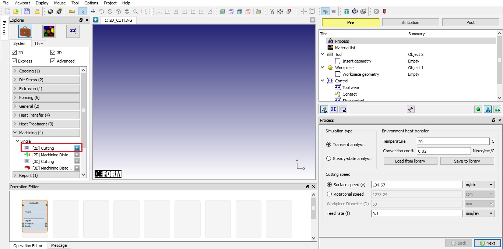
Adding operation from Explorer Operation list
From process page user can select the simulation type and can define the “Environment heat transfer” and “Cutting speed” (see Fig. 39.1.5.). The problem setup will be different for both Transient and Steady-state simulation types.
Transient analysis: In transient analysis, problem is modelled in time domain and output state variables are determined according to the process time and simulation controls set by the user. Simulation stops when process time is reached or satisfies any other stopping controls.
Steady-state analysis: Output from a transient analysis or problem with some initial solution can be used to model steady-state analysis. Using steady-state option we can analyse state variables values when steady-state is achieved. Simulation stops when steady-state is achieved.
Surface speed (v): It is the speed at which workpiece surface moves away from the cutting tool. The surface speed can be defined as mm/sec or m/min in SI and in/sec or ft/min in English units. This value is assigned to workpiece as velocity BCC.
Rotational speed: It is the speed at which workpiece rotates about the axis. The rotational speed can be defined as rpm or radians per sec. This value is converted to surface speed and assigned to workpiece as velocity BCC. Workpiece Diameter must be defined when rotational speed is used.
Workpiece Diameter (D): It defines the diameter of the workpiece. This value must be defined when we are defining the rotational speed. This can be defined in mm or m in SI and in or ft in English units.
Feed rate (f): It is defined as the distance the tool travels against the workpiece during one revolution of the workpiece. The tool position is determined by the feed rate. This can be defined as mm/rev or mm/sec in SI and in/rev or in/sec in English units.
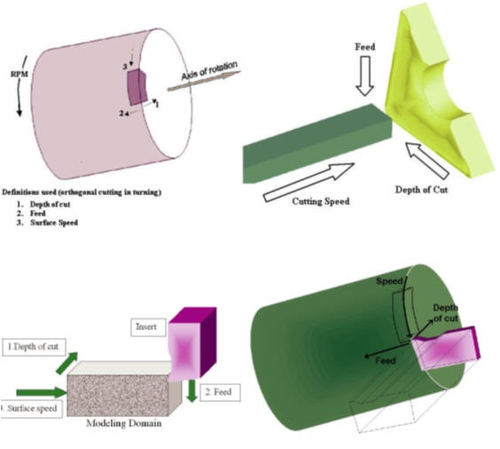
Relationship between the process data and analysis domain
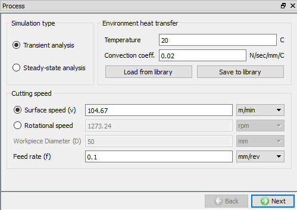
Process page
Save to library : User can save the Convection coefficient to the library and can be used later in other simulations. We can also create the new category to save the Convection coefficient as shown in the Fig. 39.1.6.
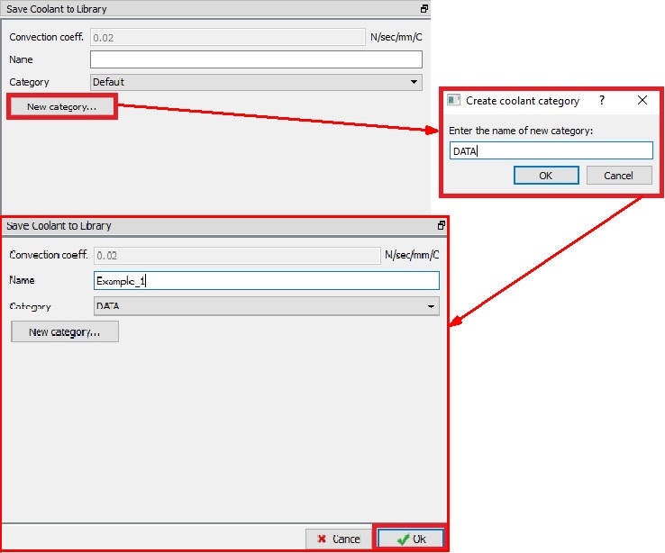
Saving Coolant Coefficient to Library
Load from library : User can load the already saved Convection coefficient from the selected category as shown in the Fig. 39.1.7. Using the Delete Category user can delete the respective category and coolants data within it. If user wants to delete only coolant data, then using “Delete Coolant” only the Convection coefficient from any category can be deleted.
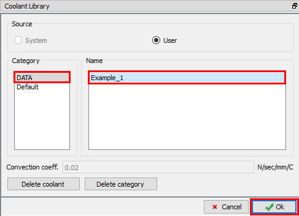
Loading Coolant Coefficient from Library
In this Material List page (see Fig. 39.1.8.), user can load a material from the Library or keyword or DB file using the , options. The materials loaded here can be assigned to the objects from their respective material page. User can also add a new material using
 button and define its properties. User can use button to delete the loaded material.
button and define its properties. User can use button to delete the loaded material.
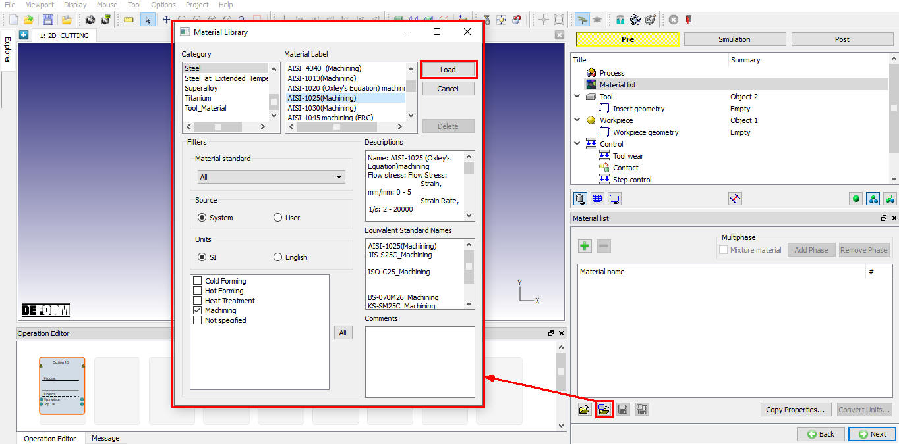
Assigning the Material from library
In this Tool page, user can define the temperature of the tool object. We can import the tool object using the button (See Fig. 39.1.9.). If user wants to calculate the thermal data for tool object, select the “Calculate tool temperature” check box and we can observe that mesh options for tool are enabled so that we can mesh the tool to calculate temperature distribution.
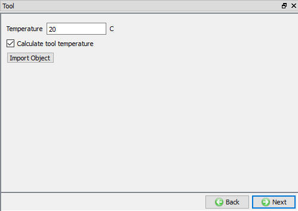
Tool Page
In this Insert Geometry page (see Fig. 39.1.10.), user can define the tool geometry using the or import the geometry using , options. Modifications to a geometry can be made using option.
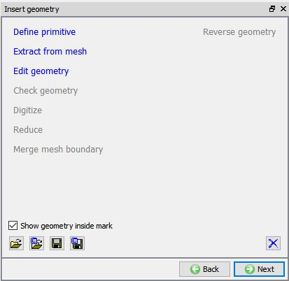
Insert Geometry Page
When user clicks on the link in Tool’s geometry page, “Insert Primitive” window will open with basic tool inserts geometries as shown in the Fig. 39.1.11. User can select any Insert to define the parameters for a cutting tool.
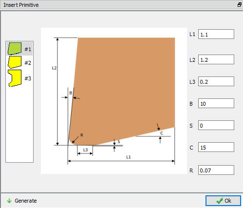
Insert Primitive Page
User can apply coating to tool insert by defining coating layer and its thickness in “Coating Material” page. User can define the coating layer material and its thickness by clicking on button as shown in the Fig. 39.1.12. If user wants to delete any layer, then user must select the respective layer and click on button.
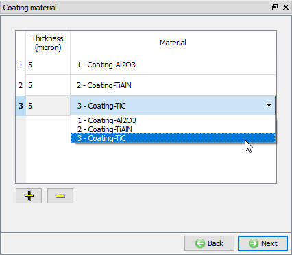
Coating Material Page
In material page, all the materials added to material list are displayed as shown in Fig. 39.1.13. User can select the required material to assign
it to respective object. If the desired material is not available in the list, then the user can load the material in object material page using “Import Material data” from a File or using “Load form Library” option . User can also create new material if the material is not available in DEFORM library using  . User can delete the material from list using or edit the material data using button. Modified
/ newly defined Material can be saved using , .
. User can delete the material from list using or edit the material data using button. Modified
/ newly defined Material can be saved using , .
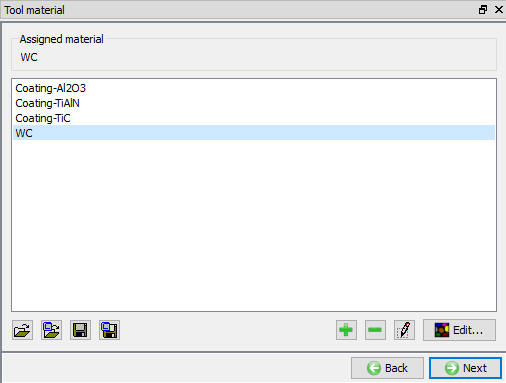
Assigning the Tool Material
User can generate mesh for the tool by defining the number of elements in “Tool mesh generation” page. System creates default mesh windows based on the tool position and sets element size value based on the feed rate. The default mesh windows will be used to generate finer mesh as shown in the Fig. 39.1.14. and Fig. 39.1.15.
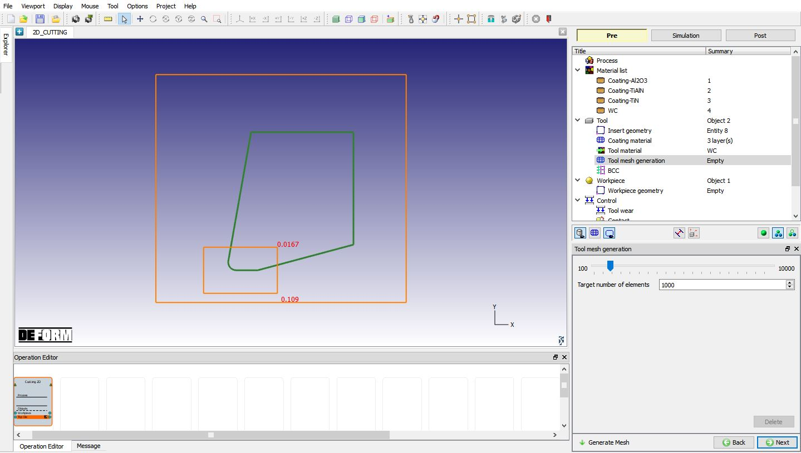
Before Tool Mesh Generation
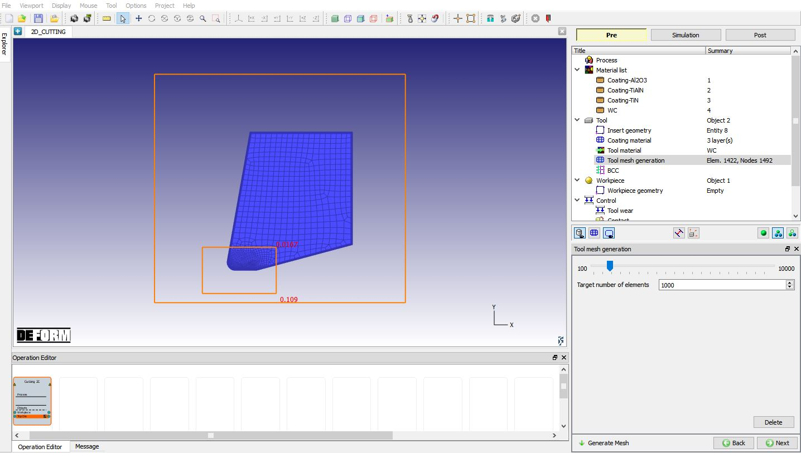
After Tool Mesh Generation
In this BCC Page, user can define the Thermal BCC like “Heat Exchange with Environment” and “Temperature”. By default, the program generates “Heat exchange with environment” (part of which comes from insert contact region) as shown in the Fig. 39.1.16. and the fixed nodal “Temperature” BCC for the surfaces away from the cutting edge as shown in Fig. 39.1.17.
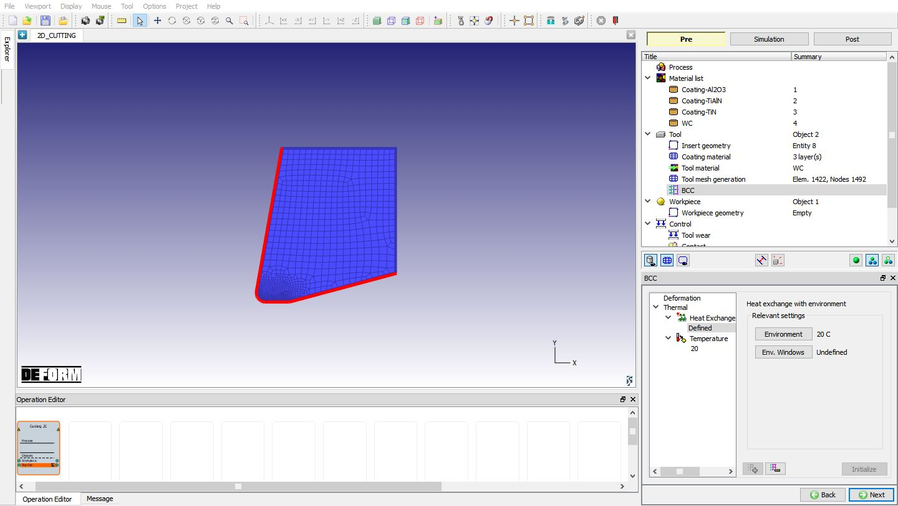
Heat Exchange with Environment BCC for tool
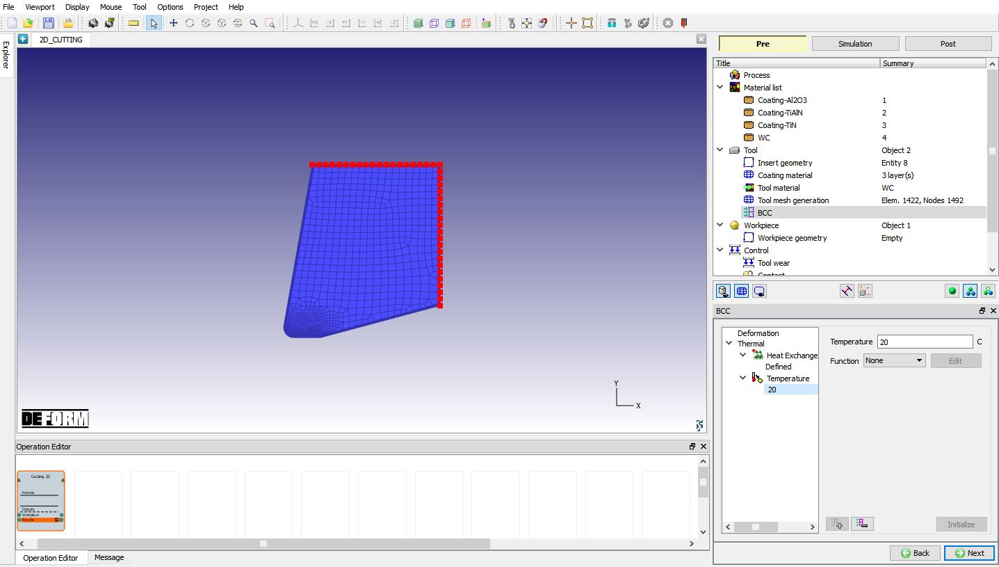
Temperature BCC for tool
In this Workpiece page, the user can define the object type and set its initial temperature. Plastic object type is selected by default (see Fig. 39.1.18.), if user is interested to consider the effect of elastic properties then Elasto-plastic object type can be used. We can also import the object data using the button.
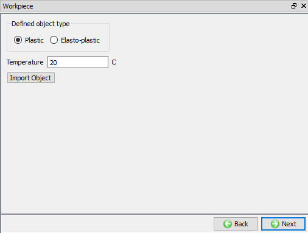
Workpiece page
In this Workpiece Geometry page (see Fig. 39.1.19.), user can define the workpiece geometry using the or import the geometry using Import geometry from a file or Import geometry from Library options . Modifications to the imported or created geometry can be made using option.
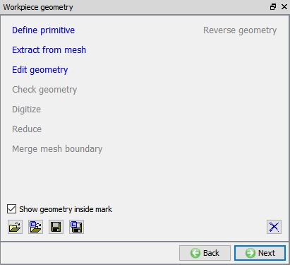
Workpiece Geometry page
When user clicks on the link, ‘Workpiece Geo primitive’ page is opened as shown in the Fig. 39.1.20. and Fig. 39.1.21. Depending on the type of process selected in the “Process” page the workpiece primitive is displayed. Fig. 39.1.20. shows workpiece primitive for Transient analysis while Fig. 39.1.21. shows workpiece primitive for Steady-state analysis.
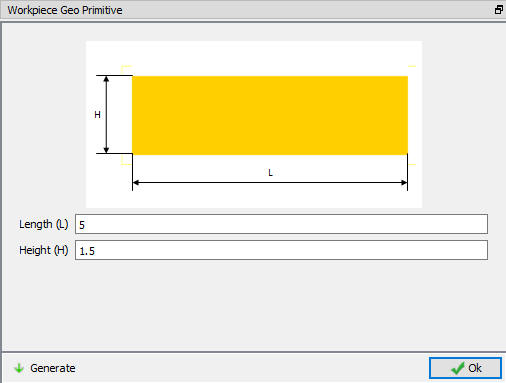
Workpiece define primitive page for Transient analysis
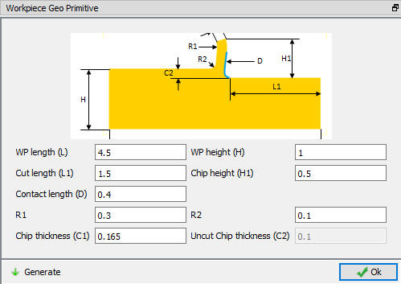
Workpiece define primitive page for Steady-state analysis
In this Object material page, the materials added to material list are displayed as shown in Fig. 39.1.22. User can select the required material to assign
it to respective object. If the desired material is not available in the list, then the user can load the material in object material page using “Import Material data” from a File or using “Load form Library” option . User can also create new material if the material is not available in DEFORM library using  . User can delete the material from list using or edit the material data using . Modified /
newly defined Material can be saved using , .
. User can delete the material from list using or edit the material data using . Modified /
newly defined Material can be saved using , .
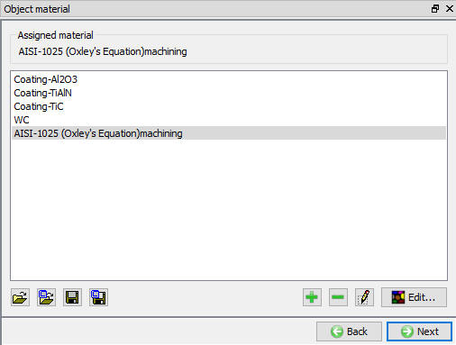
Object Material Page
User can generate mesh by defining the number of elements through uncut chip thickness in “Workpiece mesh generation” page. The Mesh density windows are automatically generated based on the tool position as shown in the Fig. 39.1.23. and element size for mesh windows is set based on the feed rate and tool’s position. From V13, Expert mode mesh options are available to modify the mesh settings if required.
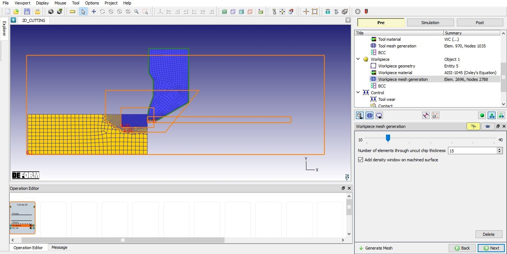
Workpiece Mesh Generation (For Transient analysis)
In case of transient analysis user can add mesh window on the machined surface by selecting the “Add density window on machine surface” check box. When user turns on this check box then a mesh window is added at the cutting edge and
follows the tool during the simulation to generate the finer mesh for machined surface as shown in Fig. 39.1.23.
In case of Steady-state analysis user can add mesh window for finer mesh on the machined surface by turning on “Add density window on exit surface” check box as shown in the Fig. 39.1.24.
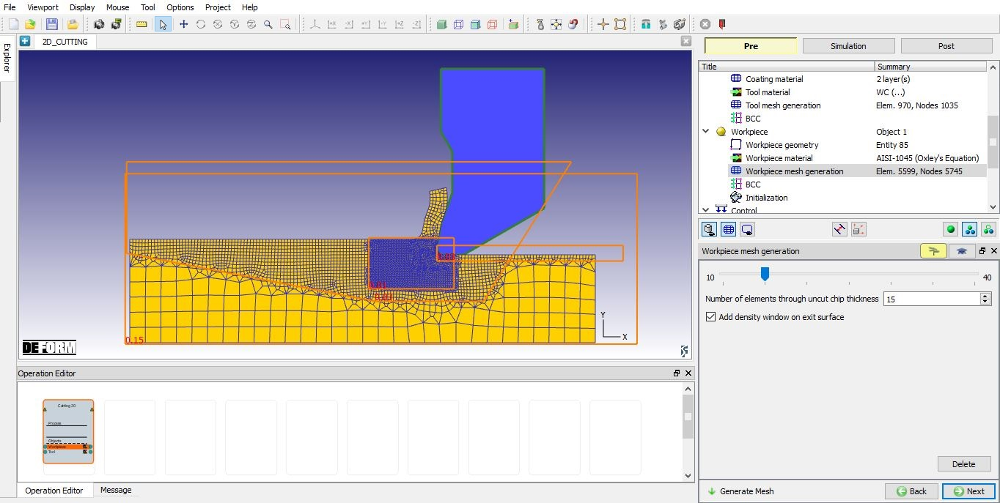
Workpiece Mesh Generation (For Steady-state analysis)
In Boundary conditions page, user can assign velocity and thermal boundary constraints to workpiece. Boundary conditions specify how the boundary of an object interacts with the environment and other object. The BCC data will be automatically assigned by default after generating the mesh. From V13.0.1, instead of Surface Velocity (Vx) BCC, Movement BCC will be defined to +X edge and bottom edge of the Workpiece as shown in the Fig. 39.1. 25. Heat Exchange with BCC is assigned to Top edge and -X (left side) edge. Temperature BCC is assigned to bottom edge and +X (right side) edge.
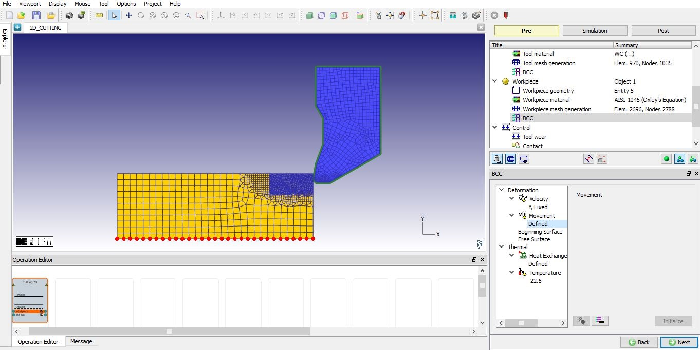
Default Workpiece BCC data (For Transient analysis)
For Steady-state analysis we can observe free surface BCC in addition to velocity and thermal BCC. Beginning surface BCC is automatically assigned on the -X edge and Free surface BCC is automatically assigned on the +X edge of
the workpiece, after mesh generation else user can also define it. From V13.0.1, instead of Surface Velocity (Vx) BCC, Movement BCC will be defined to +X edge (right side) and bottom edge of the Workpiece as shown in Fig. 39.1.26. Beginning surface BCC is assigned to the surface (-X edge (leftside) of the Workpiece) away from
the cutting direction. Free surface BCC is assigned to top edge of the chip and to the surface from where Cutting is started (+X edge (right side) of the Workpiece) as shown in Fig. 39.1.27. Heat
Exchange with BCC is assigned to top edge surface except top edge of the chip. Temperature BCC is assigned +X edge (right side) and bottom edge of the Workpiece (See Fig. 39.1.28.).
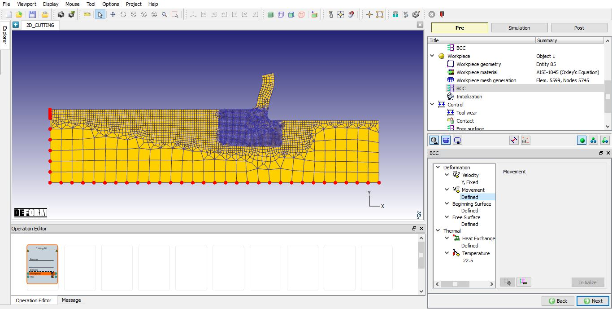
Default Workpiece Movement BCC data (For Steady-state analysis)
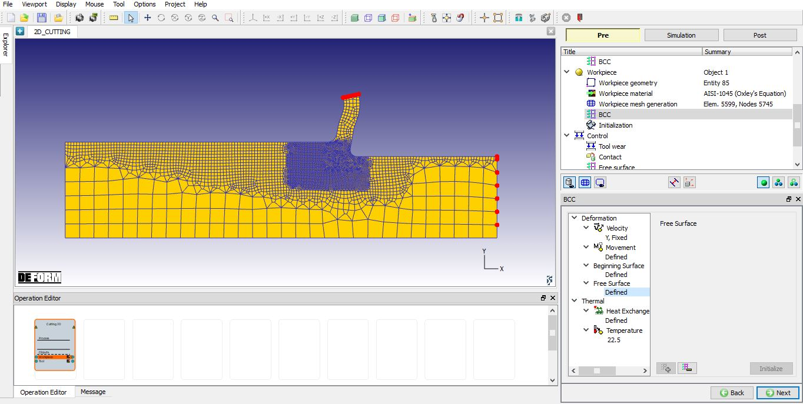
Free Surface BCC assigned for Workpiece (For Steady-state analysis)
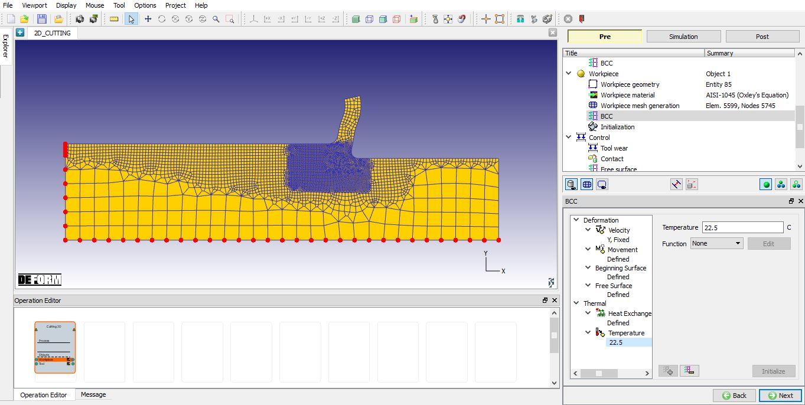
Temperature BCC assigned for Workpiece
In this Initialization Page, user can initialize the strain value of the workpiece by defining the constant value or as function of depth (see Fig. 39.1.29.). We can also initialize strain values by interpolating from other database using “Browse” button under “Function of depth”. User can select the length up to which the initialization can be done from entrance using the sliding bar, sliding bar indicates the “Entrance”, “Insert” position and “Exit”.
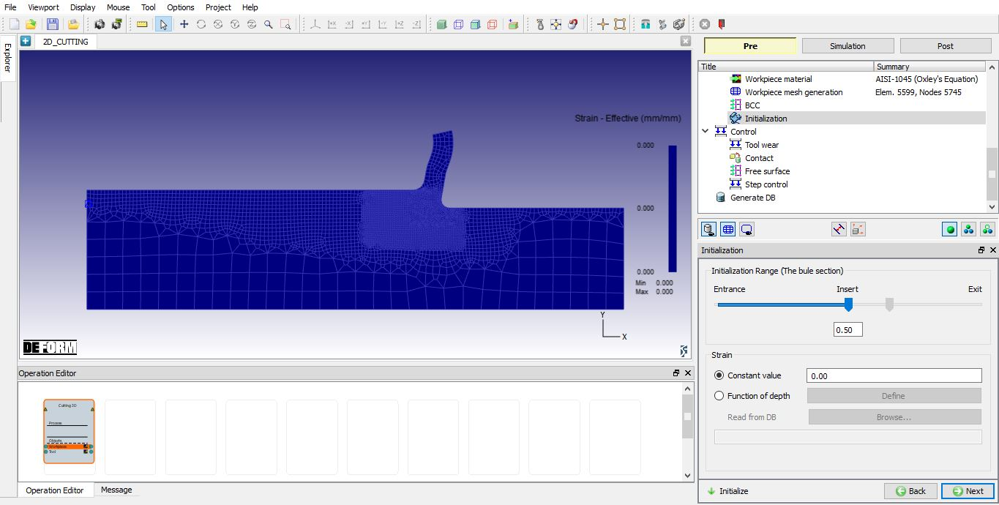
Initialize page for Steady-state analysis
can be used to position the tool using interference position based on the feed rate and workpiece location. Tool can also be rotated by defining the rotation angle and turning on the “Rotation angle” check box while using “Automatic Position”.
User can position the objects using button. Various positioning options are available to position the objects as shown in Fig. 39.1.30.,
for more information on these options please refer 19. Object Positioning.
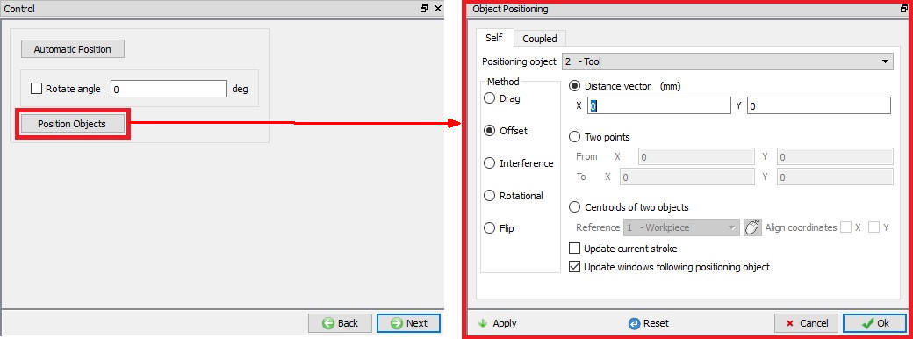
Object Positioning options
User can turn on tool wear calculation using “Define model to calculate tool wear” check box. After turning on check box user can select the tool wear model and define its parameters as shown in the Fig. 39.1.31., for more information on these options please refer 20.4.Tool Wear.
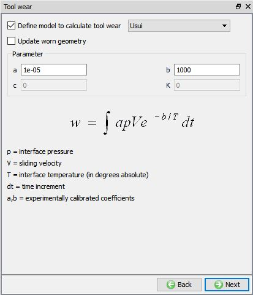
Tool Wear page
By default, user radio button will be selected, and default relations also will be defined for 2D Cutting operation as shown in Fig. 39.1.32. User can modify the value of each relation by selecting it and clicking on button. User can click on to button to calculate contact tolerance. User can click on to generate contact relation. User can turn on check box next to contact relation to define sticking contact.
For more information please refer 20. Inter-Object Relations.
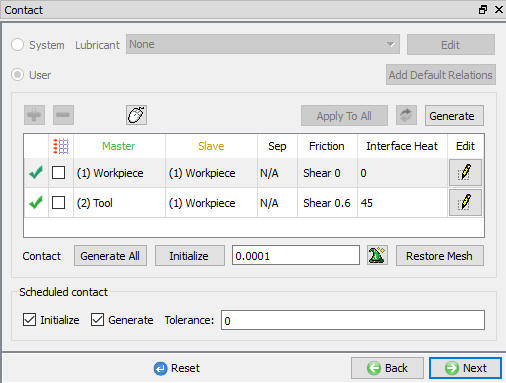
Contact page
User can define the Free Surface along the chip by picking the nodes to be cut off from the chip as shown in the Fig. 39.1.33.
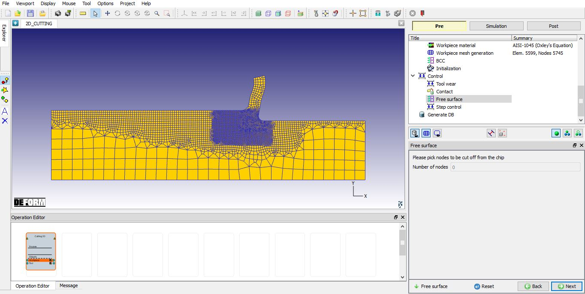
Free Surface page (For Steady-state analysis)
The user can define the step controls data using the Guided mode as shown in the Fig. 39.1.34. For Transient analysis if user wants to use the advanced simulation controls than we can switch to the Expert mode as shown in the Fig. 39.1.35. For more information and description about options in Simulation controls please refer 9. Simulation Controls.
Starting Step Number : If a new database is written, the specified step number will be the first step in the database. If data is written to an existing database, the pre-processor data will be appended to this database in proper numerical order, and any steps after the one specified will be overwritten.
Number of steps: Number of steps to be simulated can be defined here. If the simulation stops earlier due to stopping criteria then, next operation starting step will be continuation from previous operation.
Step increment: The step increment to save in the database controls the number of steps that the system will save in the database. When a simulation runs, every step must be computed, but does not necessarily need to be saved in the database. Storing more steps will preserve more information about the process, consequently it will require more storage space.
Stopping Criteria:
For Transient analysis: We need to define the Length of cut so the simulation stops automatically after cutting the defined length.
For Steady-state analysis: Steady state simulation can be automatically stopped once the steady state is reached based on the defined convergence tolerance value of temperature and strain.
Step Increment Control : The time per step or displacement per step is automatically calculated based on the feed rate, these values can be set as per user’s choice.
Convergence Settings for temperature and strain (Steady- state analysis only) : In case of steady-state analysis, user can choose either UL solution method or Convective method to update temperature and strain values. If user chooses the UL solution, then user can define the steps scaling factor for the respective state variable. User can set the convergence tolerance for strain and temperature to achieve the steady state.
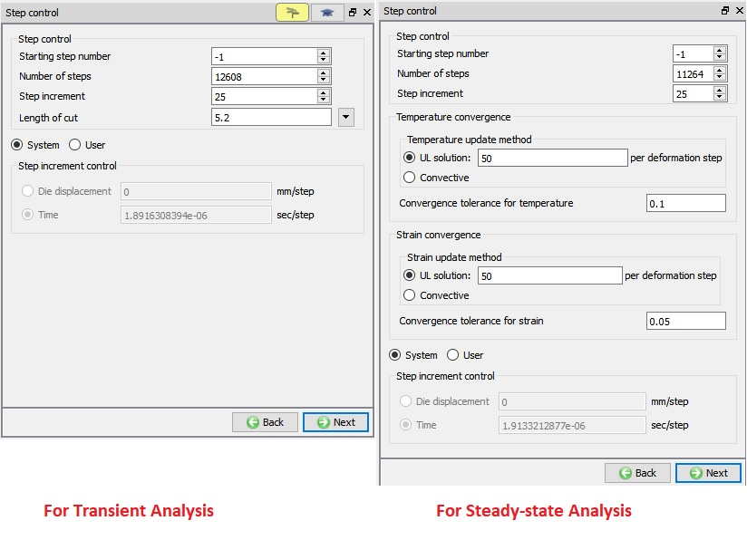
Step Controls page in Guided mode
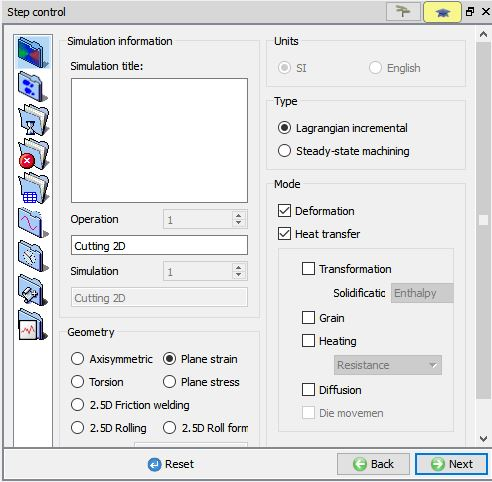
Step Controls page in Expert mode (Only for Transient analysis)
Check Data: When user clicks on check on , then system checks the data defined based on the process conditions, object data and simulation controls. If data is correct,
then we can generate DB. While checking the data if it gives any errors or warnings then those should be corrected before generating database. Errors will not allow the database to be generated while warnings will allow the database to be generated.
Generate Database: By clicking on  button, it generates the Database for the setup. (See Fig. 39.1.36.)
button, it generates the Database for the setup. (See Fig. 39.1.36.)
Append Key file : Any information that is not defined in the wizard but still applicable to the process can be loaded as .key file. This option is also useful in the cases where only few values needs to be changed then those values
can be defined as .key file and only .key file can be changed, and simulation can be resubmitted.
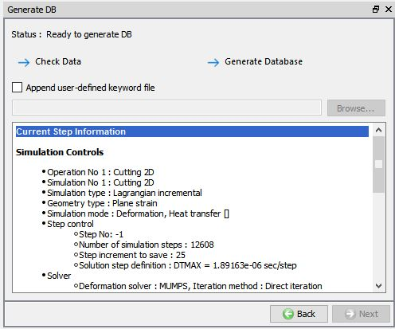
Generate DB page